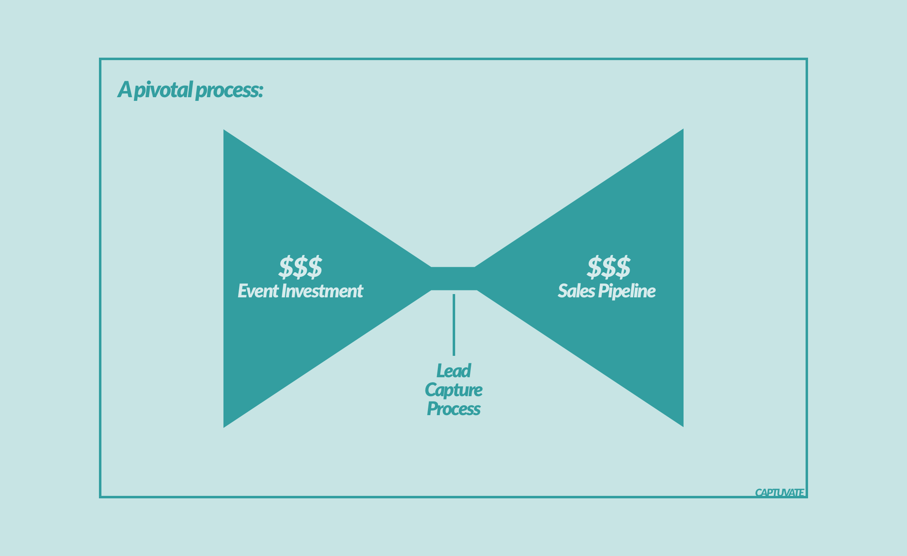
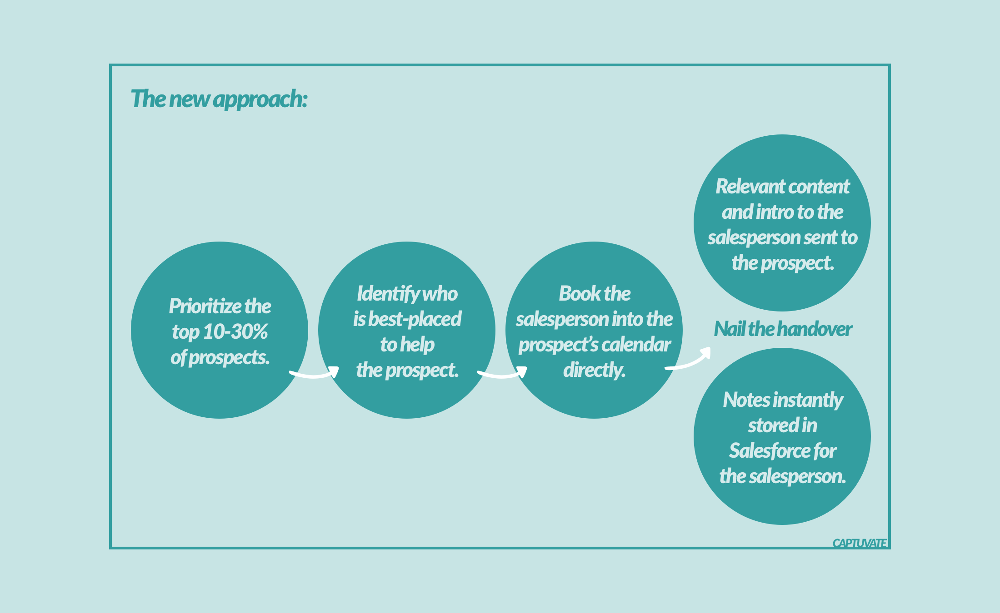

For 99% of Marketers, there’s one simple thing that’s killing your TRade Show ROI
I’d like to make the case that your lead capture process is killing your event ROI. Or more accurately, it’s killing your ROI if you’re like 99% of the Event Marketers out there.
How you engage prospects and capture leads is a pivotal step, linking hundreds of thousands of dollars in investment with hundreds of thousands of dollars in sales pipeline.

And this is where so many Event Marketers are unwittingly destroying thousands in qualified sales pipeline.
But before we get to showing you why such a simple step can result in the evaporation of so much sales pipeline, I’d like to provide a bit of context. Specifically, I’d like to show how the event landscape is shifting, and how these shifts affect the average Event Marketer.
I’ll then dive into how the tactics you use to engage prospects result in fewer qualified leads, and how these tactics can even help put your competition in pole position to influence your prospect’s buying agenda (your sales team’s worst nightmare).
Finally, we’ll work through a quick calculation — to quantify how much sales pipeline you could be leaking — before introducing our thoughts on how to make things better.
(Hint: it involves fast-tracking your most engaged prospects directly to a hand-picked salesperson, one that’s best-placed to carry the baton from there-on...)
Ready?
Let’s dive in!
Let’s start by setting the scene. There are many who believe that the event marketing landscape is shifting. Today’s Event Marketers live in a world where:
- Prospects are overwhelmed with marketing messages from every angle. They’re speaking with dozens of prospective vendors at every event. According to Exhibit Surveys’ research, the average trade show attendee spends 9.5 hours on the exhibit floor. That’s a lot of times their badge is being scanned!
- Marketing teams are being held more accountable for generating qualified sales pipeline, not just providing a number of leads. In fact, 79% of senior Marketers think they’ll be viewed as a revenue driver in the next 3-5 years, according to research from The Economist and Marketo.
- Sales teams are under more pressure to be working smart, focusing on leads which are ready for their attention. In Skyline’s recent webinar on Trade Show Lead Management Essentials, Sofia Troutman asked, “have you ever seen a sales guy who didn’t have dozens of overdue calls scheduled in their Salesforce account?” It’s true. Most sales teams aren’t struggling for numbers to dial. But they are struggling to have enough impactful conversations.
- The competition is becoming increasingly sophisticated in their marketing efforts. Put it this way, 7,000 of your event marketing peers aren’t attending ExhibitorLive to become less sophisticated in how they market their company at events!
"Have you ever seen a sales guy who didn’t have dozens of overdue calls scheduled in their Salesforce account?"
But why do these shifts affect the average event marketer?
In short, because if it hasn’t happened already, the productivity of a company’s event marketing team is about to loom much larger on the radar of CMOs and senior marketing leaders.
There’s three reasons why event productivity could see an increased focus:
- Events are expensive.
Whether it’s a justified investment or not, there’s little denying that event marketing campaigns can account for a larger percentage of a marketing budget than other options in the CMO’s toolkit.
- Events are valuable.
According to Cvent’s CMO Solution Guide for Modern Event Marketing, 69% of CMOs state that events are extremely or very valuable (on a 5 point scale) for facilitating revenue growth. Anything that’s this important to revenue growth will always have a CMO’s eagle eye.
- Event marketing can be seen as unsophisticated (relatively speaking).
In the same guide, author John Ellett states, “Compared to other components of the CMO’s marketing mix that have become more sophisticated in measuring ROI, event marketers are lagging in their ability to connect the dots between activities and demonstrated results.”
So event marketers are seeing shifting sands at a time when marketing leaders are paying more attention to them. How can they level-up?
We believe the prime area of focus should be lead management.
How an Event Marketer manages the process of engaging prospects has a direct impact on the sales pipeline generated at events. When it comes to improving your results, there’s no other area that provides so much bang for your buck.
But what’s wrong with our current lead capture process?
Every Event Marketer works hard to drive traffic to their booth, and hopes to engage prospects when they get there. But most processes for dealing with leads are massively inefficient.
These inefficiencies can be grouped into two areas: most lead capture processes waste salespeople’s time and kill promising opportunities.
You're wasting salespeople's time
Most trade show leads should not be sent straight to Sales.
Sales teams want sales-ready leads, not just mountains of names to call. But mountains of names is exactly what most event lead capture systems provide. And many of these ‘leads’ were probably never really interested in the exhibitor’s offering. More probably, they were just too polite to refuse having their badge scanned. But many exhibitors simply export this data from their badge scanning tools, and dump it straight into Salesforce.
When this approach to capturing leads is used, let’s compare the efforts exerted versus the rewards gained for both the booth staffer and the salesperson:
- With the tiniest bit of effort, a booth staffer scans an attendee’s badge. Sometimes, not a single word is spoken! But the marketers are rewarded for generating lots of leads. More scans are better than fewer scans. Little effort, large rewards.
- But often a salesperson must manually follow-up with each and every one of these leads. And that involves research time. And time to follow-up again, and again, when their initial efforts fall on deaf ears. To rub salt in the wounds, salespeople are criticized for not putting in this effort, and are only rewarded months down the line if revenue is generated. Huge effort, minimal rewards.
Salespeople are under pressure to make this quarter’s quota, yet they’re also under pressure to help Marketing show their events investment is bearing fruit.
Most salespeople are adept at prioritizing their own tasks, and few would choose to prioritise calling through large lists of badge scans provided by Marketing. More often than not, it’s just not an impactful task.
So the least marketing can do is lend a helping hand, starting with filtering out prospects who are just a drain on sales resources (and who contribute towards diminishing any goodwill Sales may have had for their Marketing counterparts).
It kills promising opportunities
We’ve all heard anecdotes of large deals first gaining traction at events. Events can provide motivated prospects and great leads.
But traditional lead capture processes can kill promising opportunities in a number of ways.
- Overcompensating.
While you don’t want to send every lead to sales, neither do you want to overcompensate and send every lead through your marketing automation platform for nurturing. Many events provide super-engaged prospects who, though small in number, convert into disproportionately better sales opportunities, disproportionately faster. Sending these leads through an automated system often removes the human touch they need to take the next step into your sales funnel.
- Losing leads altogether.
No matter how promising a prospect looked when they were at your booth, it’ll be hard to maintain their motivation when they’re back at the office and looking at an inbox full of emails from other exhibitors. Everyone has seen prospects go AWOL after (seemingly) positive conversations at the booth. And it'll only get worse as exhibitors engage in more trickery to scan everything that moves.
- Losing momentum.
Perhaps your sales team weren’t given the leads fast enough. Perhaps they spent too long filtering through non-leads. Or perhaps they just spent weeks playing email tag, trying to schedule a follow-up conversation in the diary. Either way, a lack of momentum can kill promising sales opportunities. It’s worse if a competitor managed to gain access to your prospect before you do. While they probably won’t close the deal before you get involved, being the first vendor to hold meaningful dialogue is invaluable for shaping the prospect’s vision of what they want. Many otherwise-promising opportunities can become unstuck because you find yourself playing by another vendor’s rules.
- Low-quality conversations.
Even if your sales team do manage to schedule a call with a prospect, the resulting conversation is often no more valuable than a cold call. Far from being able to utilize the insight you gained at the event booth, the salesperson often has to start from scratch while the prospect struggles to differentiate your company from the 30 other vendors she spoke with that day.
So how do these issues affect your sales pipeline?
Let’s say that for every 100 prospects you meet, 20 are qualified and ready to speak to Sales. Of those 20 prospects, 10 will be accepted as sales qualified, and — if you have an average value of, say, $30k — they account for $300k of sales pipeline.
But because of how you capture those leads, it’s difficult for your sales team to locate the sales-ready leads. Every lead looks the same.
For the sales-ready leads they do find, there’s a loss of momentum and an increase in competition.
And when those few discussions do occur, they’re not as valuable — there’s a lack of context and a loss of first-mover advantage. Suddenly you’re looking at 4 or 5 SQLs instead of 10.
So for every 100 prospects you’re engaging at the booth, you’re losing half your SQLs, accounting for $150k of qualified sales pipeline. All because of a process gone wrong.
(Charlie Liang of Engagio runs through a similar exercise in this article, surmising that every 'lost' follow-up meeting with a trade show lead is worth $6,250 in sales pipeline. As Charlie says, it's like "lighting money on fire".)
So what do we suggest?
We suggest that Event Marketers fast-track the most engaged leads directly to a member of their sales team; specifically a hand-picked colleague who is best-placed to help this particular prospect.
And yup, that means taking time, at the event, to book your salesperson into the prospect’s calendar.

Why might this be a better approach?
- Better experience for sales-ready leads.
These (disproportionately more valuable) prospects are being walked through a process that’s valuable to them. First, by offering them a follow-up meeting with a rough agenda, you’re giving your prospects a feeling for what’s happening next and why it’s worth their while. You’re also showing that you’re experienced in handholding customers through a buying cycle — something that few prospects know how to navigate effectively. Finally, you're selecting a hand-picked salesperson to act as their concierge. This helps make that personal connection, and is much more powerful than a prospect leaving the booth not knowing who their contact is going to be.
- More influence over the purchase criteria.
Having a seamless (and expedited) transition from booth conversation through to follow-up conversation can increase the likelihood that it’s your sales team who is shaping your prospect’s agenda, not your competition.
(Any vendor with experience of completing RFPs know how demoralising it can be to try to fit their solution into a buying framework that's been designed by someone else.)
- Stronger alignment with sales objectives.
When it comes to generating qualified leads from events, don’t think of it as two distinct tasks (the capture part, and the follow-up/qualify part). Doing so can result in Marketing solely focusing on “their job”, to the detriment of their colleagues in Sales. Instead, treat the process as a single journey. When qualifying prospects on the booth, Event Marketers are really taking the first step in a sales process — and the hand-off to Sales is a natural progression along a single path. When treated as such, Sales and Marketing will be much more aligned.
- Reduced burden on Sales.
Because Event Marketers now have a go-to next step for their most engaged prospects, Sales will also know where to focus their time. Salespeople will know who they’re following-up with, they'll know why they’re following-up, they'll know their prospect is expecting them, and they can expect less competition as they push the prospect further down the sales funnel. And Sales won't be fatigued from attempting to reach dozens of unresponsive prospects.
- Better experience for non-sales-ready leads.
This approach doesn’t just benefit the minority of leads who were deemed to be sales-ready. When a prospect declines the opportunity to schedule a follow-up, they’re implying that they’re not yet ready to be sold to. This information can be used to your advantage. Not only can you save your prospects from (clearly unwanted) attention from Sales, but you can put them on a nurturing track that’s more suited to where they are in their purchase cycle.
So what needs to happen to make this work?
Well that's an article for another time, but here's a sneak peak.
It involves a change in how you engage prospects at events, and it more than likely involves a change in the tools you use (as you probably guessed it would!).
Engaging prospects:
The quickest win you can have is to refrain from blindly scanning every prospect, and think about how you can help your colleagues in Sales get a head-start on those most-engaged of leads.
Sure, you'll still "just scan" the vast majority of your booth visitors, but keep your eyes peeled for those VIP prospects, and be ready to act accordingly.
Tooling up:
All you really need to book prospects into your sales team's calendars is a laptop with working internet connection and, of course, access to every calendar you'll need.
If you're looking for something that's a little more sophisticated, check out Captuvate.
It works offline, it helps you route prospects to the most appropriate salesperson (useful when you don't know your whole sales team by name), it takes care of timezones, it sends intelligently-crafted meeting invitations, and it syncs with Salesforce.com.
Wrapping up
In the fast-paced environment of many events, I’m not suggesting there’s no place for quickly scanning a prospect’s badge. There’s a lot of value in making hundreds of ‘first contacts’, which can then be nurtured within your marketing automation systems.
However, I’d argue that all leads are not created equal.
So if you’re looking for a way to generate more qualified sales pipeline from the same events investment, I’d suggest you could do worse than changing your approach to engaging the 10-30% of your most-motivated prospects. And playing matchmaker between these guys and your own in-house specialists is a great way to do just that.

Brian Anderson
Co-Founder of Captuvate